1Unit 6.1 | DOK 1
Use the zero product property to solve $(x-3)(x+5)=0$. Explain why each factor gives one solution.
solutions:
zero-product reasoning:
Use the zero product property to solve $(x-3)(x+5)=0$. Explain why each factor gives one solution.
A rectangle has area ${54}$ square units and side lengths $x$ and $x+3$. Write and solve a quadratic equation for the positive value of $x$.
Find the constants that complete each square.
Rewrite $y=x^2-10x+18$ in vertex form and name the vertex.
Identify $a$, $b$, and $c$ for ${2x^2-7x+3=0}$. Then set up the quadratic formula without simplifying.
Use the quadratic formula to solve $x^2-3x-5=0$ exactly. Then state whether the solutions are rational or irrational.
The graph and equation represent the same quadratic. Estimate the zeros from the graph first, then choose an efficient algebraic method to solve $y=x^2-10x+24$.

Analyze $y=(x-4)^2+6$. Without expanding first, decide whether ${0=(x-4)^2+6}$ has real solutions. Justify using structure.
For the height model $h(t)=-5(t-3)^2+50$, identify the vertex and explain what it means in context.
A height-over-time model has zeros at about $-0.5$ second and ${4}$ seconds. Use the graph and context to decide which zero is meaningful, what it means, and why the other zero is not meaningful.
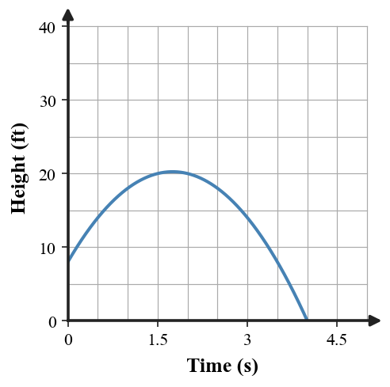
Use the zero product property to solve $(2x-7)(x+1)=0$. Explain why each factor gives one solution.
A rectangle has area ${70}$ square units and side lengths $x$ and $x+3$. Write and solve a quadratic equation for the positive value of $x$.
Find the constants that complete each square.
Rewrite $y=x^2+6x-4$ in vertex form and name the vertex.
Identify $a$, $b$, and $c$ for ${3x^2+5x-2=0}$. Then set up the quadratic formula without simplifying.
Use the quadratic formula to solve $x^2+5x-2=0$ exactly. Then state whether the solutions are rational or irrational.
The graph and equation represent the same quadratic. Estimate the zeros from the graph first, then choose an efficient algebraic method to solve $y=x^2-8x+15$.
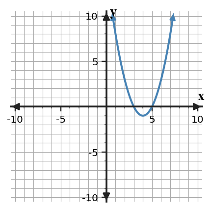
Analyze $y=(x+3)^2+5$. Without expanding first, decide whether ${0=(x+3)^2+5}$ has real solutions. Justify using structure.
For the height model $h(t)=-4(t-2)^2+36$, identify the vertex and explain what it means in context.
A height-over-time model has zeros at about $-0.25$ second and ${3.5}$ seconds. Use the graph and context to decide which zero is meaningful, what it means, and why the other zero is not meaningful.
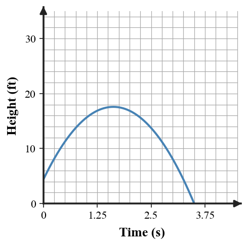
Write a factored equation with zeros $-4$ and ${6}$, then solve it to verify the zeros.
A rectangle has area ${84}$ square units and side lengths $x$ and $x+5$. Write and solve a quadratic equation for the positive value of $x$.
Complete the square: $x^2+14x+20=(x+7)^2+\Box$. Find the missing value.
Complete the square to solve $x^2-4x-12=0$. Show the square equation before solving.
Compute the discriminant for $x^2-6x+11=0$, then state whether the solutions are real.
Use the discriminant to predict the number of real solutions for ${2x^2+4x+7=0}$, then explain the prediction.
The graph and equation represent the same quadratic. Estimate the zeros from the graph first, then choose an efficient algebraic method to solve $y=x^2-6x+8$.

A student says the solutions of $x^2-6x-16=0$ are $x=2$ and $x=8$ because the factors are $(x-2)(x-8)$. Identify the error and correct the solution.
A revenue model has vertex $(6,72)$. State the maximum revenue and the input where it occurs.
A height-over-time model has zeros at about $-0.4$ second and ${5}$ seconds. Use the graph and context to decide which zero is meaningful, what it means, and why the other zero is not meaningful.
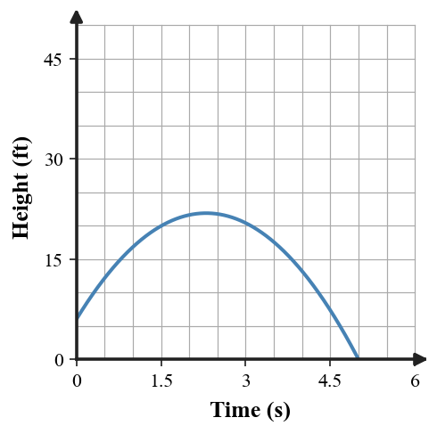
Write a factored equation with zeros ${2}$ and $-9$, then solve it to verify the zeros.
A rectangle has area ${96}$ square units and side lengths $x$ and $x+4$. Write and solve a quadratic equation for the positive value of $x$.
Complete the square: $x^2-8x+11=(x-4)^2+\Box$. Find the missing value.
Complete the square to solve $x^2+8x-9=0$. Show the square equation before solving.
Compute the discriminant for $x^2+4x+8=0$, then state whether the solutions are real.
Use the discriminant to predict the number of real solutions for ${3x^2-6x+8=0}$, then explain the prediction.
The graph and equation represent the same quadratic. Estimate the zeros from the graph first, then choose an efficient algebraic method to solve $y=x^2-12x+35$.
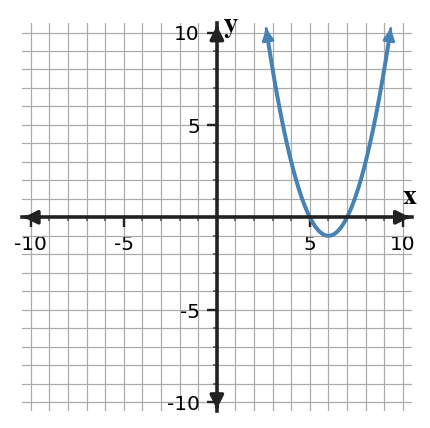
A student says the solutions of $x^2+2x-35=0$ are $x=5$ and $x=7$ because the factors are $(x-5)(x-7)$. Identify the error and correct the solution.
A profit model has vertex $(8,96)$. State the maximum profit and the input where it occurs.
A height-over-time model has zeros at about $-0.75$ second and ${4.5}$ seconds. Use the graph and context to decide which zero is meaningful, what it means, and why the other zero is not meaningful.
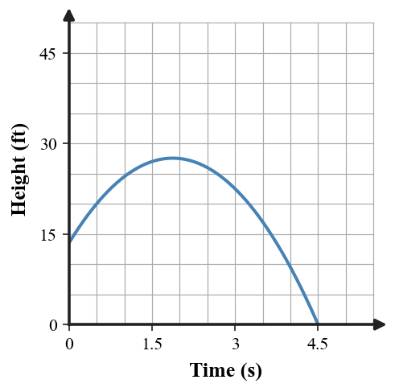
Rewrite $y=x^2-12x+32$ in vertex form, then use it to identify the minimum value.
For $A(w)=w(18-w)$, explain a reasonable domain for the rectangle context.
Solve ${3x^2+12x=0}$ and connect each solution to an intercept of the graph.
Use the formula to solve ${4x^2+4x+1=0}$. Explain how the discriminant affects the result.
Factor $x^2+9x+20$, then use the zero product property to name the solutions.
A student chooses the quadratic formula for $x^2-16=0$. Is that method correct, efficient, both, or neither? Solve and defend a better method.
Fill the blank: $(x-7)^2=x^2-14x+\Box$. Explain how the middle term helps.
A height-over-time model has zeros at about $-0.3$ second and ${3.8}$ seconds. Use the graph and context to decide which zero is meaningful, what it means, and why the other zero is not meaningful.
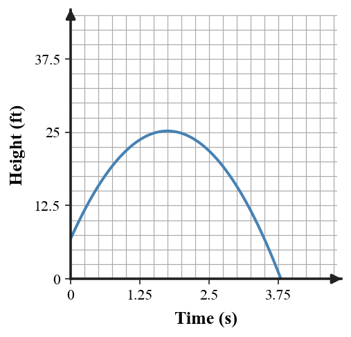
Use the discriminant to tell whether ${3x^2+2x+5=0}$ has real solutions. Show the value of $b^2-4ac$.
The graph and equation represent the same quadratic. Estimate the zeros from the graph first, then choose an efficient algebraic method to solve $y=x^2+2x-15$.
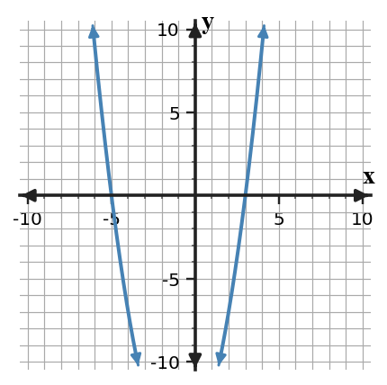
Rewrite $y=x^2+4x-7$ in vertex form, then use it to identify the minimum value.
For $A(x)=x(24-2x)$, explain a reasonable domain for the area context.
Solve ${2x^2-14x=0}$ and connect each solution to an intercept of the graph.
Use the formula to solve ${9x^2-12x+4=0}$. Explain how the discriminant affects the result.
Factor $x^2-11x+30$, then use the zero product property to name the solutions.
A student chooses completing the square for $(x-2)(x+9)=0$. Is that method correct, efficient, both, or neither? Solve and defend a better method.
Fill the blank: $(x+5)^2=x^2+10x+\Box$. Explain how the middle term helps.
A height-over-time model has zeros at about $-0.6$ second and ${5.2}$ seconds. Use the graph and context to decide which zero is meaningful, what it means, and why the other zero is not meaningful.
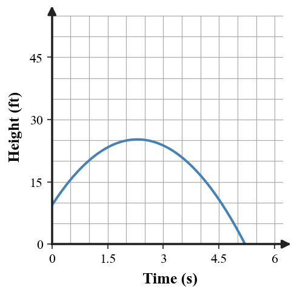
Use the discriminant to tell whether ${2x^2-4x+9=0}$ has real solutions. Show the value of $b^2-4ac$.
The graph and equation represent the same quadratic. Estimate the zeros from the graph first, then choose an efficient algebraic method to solve $y=x^2-x-20$.
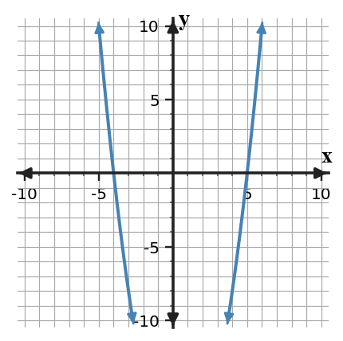
The graph and equation represent the same quadratic. Estimate the zeros from the graph first, then choose an efficient algebraic method to solve $y=2x^2+9x-5$.

State why adding ${25}$ completes $x^2-10x$, then write the squared binomial.
A height-over-time model has zeros at about $-0.2$ second and ${3.4}$ seconds. Use the graph and context to decide which zero is meaningful, what it means, and why the other zero is not meaningful.
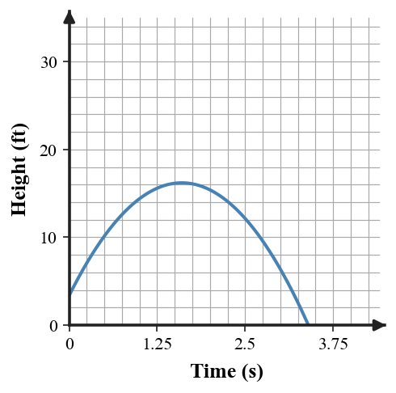
Solve $x(x-9)=0$ and explain why one solution is ${0}$.
Compare two possible methods for solving $x^2+10x+25=0$. Explain which method is most efficient and why, then solve.
For $a=5$, $b=-12$, and $c=7$, find $-b$, ${2a}$, and $b^2-4ac$.
Factor and solve $x^2+x-20=0$. Explain how the factors show the two zeros.
The graph of a quadratic height model has a maximum point at $(2.5,40)$. Interpret both coordinates.
Use the quadratic formula to solve ${2x^2+9x-5=0}$. Report exact solutions.
Complete the square to solve $x^2-6x-7=0$, and check one solution by substitution.
The graph and equation represent the same quadratic. Estimate the zeros from the graph first, then choose an efficient algebraic method to solve $y=3x^2-10x-8$.
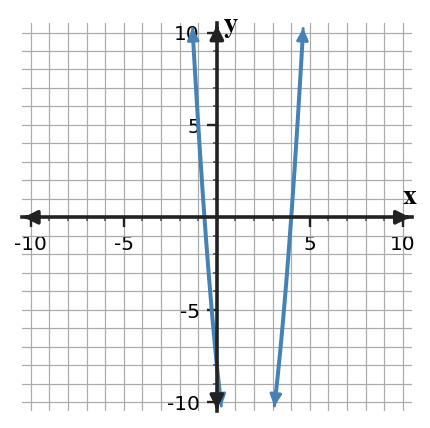
State why adding ${36}$ completes $x^2+12x$, then write the squared binomial.
A height-over-time model has zeros at about $-0.5$ second and ${4.8}$ seconds. Use the graph and context to decide which zero is meaningful, what it means, and why the other zero is not meaningful.
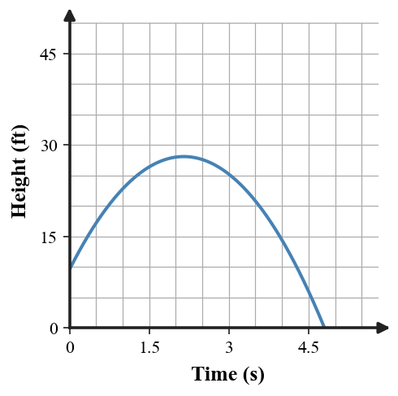
Find the missing factor in $x^2-7x+12=(x-3)(\,?\,)$, then name the zeros.
Compare two possible methods for solving ${4x^2-25=0}$. Explain which method is most efficient and why, then solve.
For $a=3$, $b=10$, and $c=-8$, find $-b$, ${2a}$, and $b^2-4ac$.
Factor and solve $x^2-3x-28=0$. Explain how the factors show the two zeros.
The graph of a quadratic profit model has a maximum point at $(7,98)$. Interpret both coordinates.
Use the quadratic formula to solve ${3x^2-10x-8=0}$. Report exact solutions.
Complete the square to solve $x^2+2x-15=0$, and check one solution by substitution.